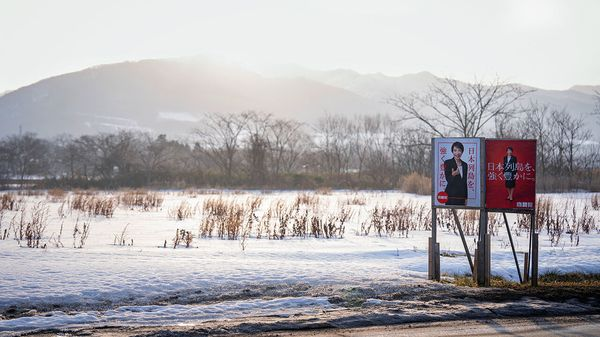
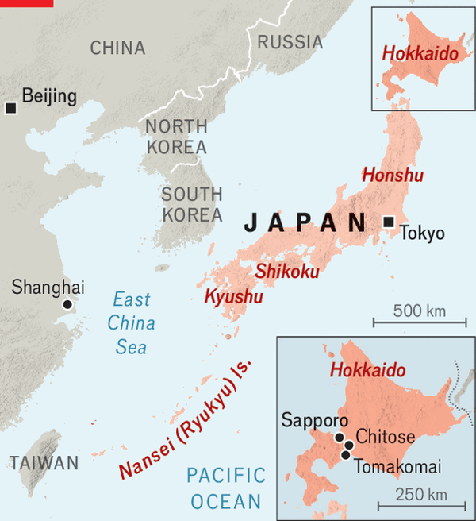

Jul 09, 2026 06:32 AM | CHITOSE AND SAPPORO

HOKKAIDO HAS long been known for dramatic volcanic peaks, creamy dairy products and powdery snow. These days, Japan’s northernmost major island is being touted by enthusiasts as the country’s next high-tech hub. “Hokkaido is the new Taiwan,” writes James Riney of Coral Capital, a Tokyo-based venture-capital firm. Japanese officials speak, somewhat breathlessly, of “Hokkaido Valley”.
The vision hinges on Rapidus, a bold if risky chipmaking effort. Launched in 2022, the company aims to bring Japan back to the frontier of advanced semiconductor manufacturing. Supported by the Japanese government and a consortium of big Japanese companies, Rapidus broke ground on its first fab in September 2023, in a field near the international airport in Chitose, a suburb south of Sapporo, Hokkaido’s capital. Pilot production of 2-nanometre chips, the cutting edge for chipmaking technology, is under way. The ambitious effort is seen as a model for the sort of new-age industrial policy favoured by Japan’s prime minister, Takaichi Sanae.

Rapidus could have set up in Kyushu, the southernmost main island. TSMC, a Taiwanese semiconductor giant, has two fabs there, tapping into a strong local supplier network. (Officials there call Kyushu a “Silicon Island”.) But the Rapidus bosses settled on Hokkaido. The island, home to the indigenous Ainu people, was once Japan’s frontier, annexed formally only in the late 19th century. The new frontier spirit is focused on pioneering semiconductors, says Ota Yasuhiko of Hokkaido University.
Rapidus cites an “abundance of water” in Hokkaido, crucial for semiconductor manufacturing, as a key reason for choosing the region. Besides that, no other prefecture in Japan has as much potential for offshore wind energy: Hokkaido is projected to produce a third of the country’s wind power by 2040. The local governor also agreed late last year to restart the island’s sole nuclear power plant, which will provide a carbon-free, stable baseload for Hokkaido’s electricity grid.
Hokkaido’s geography also brings a number of other advantages. Large and sparsely populated by Japanese standards, the island offers ample space for new production facilities; Rapidus hopes to build several more fabs next to its first. Cooler temperatures make it a desirable location for data centres, which run hot; SoftBank, a Japanese tech giant, recently began building a ¥65bn ($400m) data centre in Tomakomai, south of Chitose. Another largely unspoken benefit is geographic diversification: if a conflict ever broke out around Taiwan, Japan’s south-west islands, including Kyushu, could be at risk; production facilities in Hokkaido, by contrast, would be much farther from any fighting.
Hokkaido would gain if there were a chipmaking boom. The semiconductor cluster could add as much as ¥11.2trn to its GDP between 2023 and 2036, according to a study by a regional-development agency. While Hokkaido will not reproduce the dynamism of Silicon Valley’s startup ecosystem or the scale of Taiwan’s chip-manufacturing base any time soon, it has a decent shot at becoming an important node in global semiconductor development and a key part of Japan’s nascent AI ecosystem. A more realistic guide may be Albany, New York, where Rapidus’s main technology partner, IBM, sits at the centre of a thriving tech research-and-development hub. Hokkaido’s governor visited Albany in 2024 to study its model.
Yet despite all the enthusiasm, the Hokkaido Valley plan faces several big obstacles. First is cultivating the third necessary resource for chip manufacturing: human talent. Hokkaido hopes to sell itself as a place where skilled engineers might want to live. True, it is bitterly cold in winter. But the island is home to world-famous ski spots. And local culinary delights, culled from the icy surrounding seas, include tasty scallops and sea urchins as well as enormous crabs.
Nonetheless, Hokkaido has few international schools for foreign recruits’ children and salaries in Japan lag behind global standards. While the region has plenty of universities and colleges, they have tended to focus on agriculture, fisheries, forestry and service industries. Hokkaido University, the biggest and oldest university, was founded as an agriculture school; it is only now gearing up to train semiconductor engineers. Rapidus has relied heavily on veteran Japanese engineers.
The second obstacle is the supplier ecosystem. Manufacturing accounts for less than 10% of Hokkaido’s output, compared with 20% nationally. While dozens of semiconductor-related firms do operate there, the industry is still small. Some of Rapidus’s partners have set up support offices nearby, but so far not big manufacturing bases of their own. Hokkaido Valley insiders acknowledge that it will take at least a decade to cultivate a thriving cluster.
Most important is the success of Rapidus itself. While the firm has made impressive technological advances, its commercial success is far from guaranteed. The true test will come when it begins mass production, which it aims to do next year. TSMC produces standardised chips at large scale; Rapidus, by contrast, plans to offer rapidly made, small batches of bespoke AI chips. Given the dearth of firms able to make cutting-edge semiconductors, and the growing demand for them, the strategy is plausible. But even in the best case, Rapidus will need to rely heavily on public subsidies. The government has already promised more than $15bn in support for the project. It is a big bet on a single firm. The Hokkaido Valley concept depends on it paying off. ■
For exclusive coverage of Asian politics, economics and security, sign up to Asia Bulletin, our weekly subscriber-only newsletter.